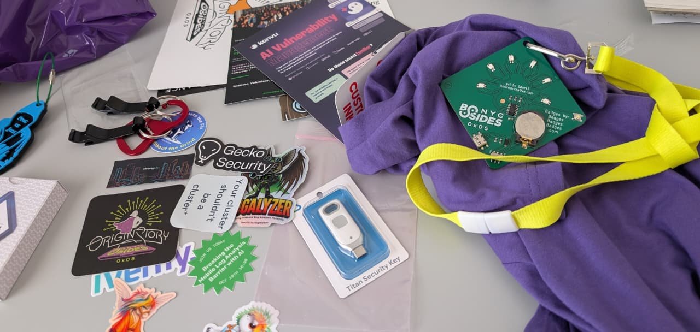
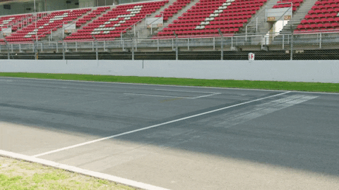
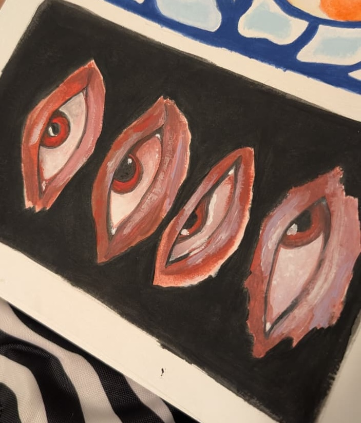

Breachy-270
Takes from a shelf with shaky stability because change is the only constant...
Writing
Notes & essaysProjects
Built & buildingBreak My Fix
Building a security agent to validate AI generated security patches.
Neatlogs · Security Testing DevOps + Security ↗AWS Infrastructure Hardening
Provisioned AWS infrastructure using Terraform with built in CI/CD checks. Automated terraform code scanning using Checkov.
AWS · Terraform · Checkov Graduate research ↗Cascading Risks in Open-Banking APIs
Exploring systemic risk through a microservices testbed and STRIDE threat modeling.
FastAPI · Docker · Keycloak Security lab ↗SecOps Lab
Simulated attacks, detection rules, and MITRE ATT&CK mappings.
OWASP Juice Shop · Docker · ELK Machine learning ↗IoT Intrusion Detection
Comparing models for intrusion detection and mapping their findings to MITRE techniques.
Python · PyTorch · Pandas Currently building ↗NoShell
A Linux-style CLI that does nothing. Powered by No-as-a-Service.
Go Full-Stack Web Application ↗SwiftVote
A blockchain-based voting web-application with smart contract vote recording.
Django · Solidity · Docker Automation ↗WatchGuard Configuration Parser
Making firewall configurations easier to inspect and audit for drift.
Python · Pandas · StreamlitSkills & Tools
What I work with
Skills
Web Application Security | Network Security | DevOps/DevSecOps | Threat Modeling (STRIDE/PASTA) | Secure Code Review | Security Automation | Incident Response | Reverse Engineering | Threat Detection and Mitigation.
Certifications
AWS Certified Solutions Architect - Associate (In Progress) · AWS Certified Cloud Practitioner · CompTIA Security+ · CEH v11
Programming & Scripting
-
 Python
Python
-
 Go
Go
-
 C
C
-
 C++
C++
-
 Bash
Bash
-
 PowerShell
PowerShell
Web Development - Full-Stack + Backend
-
 JavaScript
JavaScript
-
 TypeScript
TypeScript
-
 HTML
HTML
-
 CSS
CSS
-
 Bootstrap
Bootstrap
-
 Django
Django
-
 Angular
Angular
Cloud and DevOps
-
 AWS
AWS
-
 Docker
Docker
-
 Kubernetes
Kubernetes
-
 Terraform
Terraform
-
 Ansible
Ansible
-
 Jenkins
Jenkins
-
 Git
Git
-
 GitHub Actions
GitHub Actions
Operating Systems I'm Familiar With
-
 Linux
Linux
-
 Ubuntu
Ubuntu
-
Kali Linux
-
 Windows
Windows
Firewalls & Detection
- Imperva WAF
-
Cisco ASA
-
Splunk
-
ELK
- Wazuh
- Zeek
- iptables
Pentesting & Reverse Engineering
-
Burp Suite
-
Metasploit
- Nmap
- OWASP ZAP
- Ghidra
- IDA Pro
- x64dbg
About Me?
TL;DR: I'm Siddhi, a Security Engineer with ~3 yrs of experience in web application security, incident response and automation. I'm a computer science graduate and hold a Master's degree in Cybersecurity from Penn State. Spent 2+ years at IBM, secured 1000+ web applications, handled more than 200 incidents and built automation for firewalls. Also worked on maritime security at BSM, built internal tools, automated IR, conducted forensic investigation and developed a config management proof-of-concept. I love participating in CTFs and Hackathons. I experiment with security and build stuff when I'm bored. Outside of security, you can find me running marathons, screaming during F1 races or quietly reading in a corner.
You’re probably reading this because you got curious about who I am? It's quite weird to write about yourself in glaring detail especially as someone who’s into cybersecurity. I can immediately think of ways in which the information I’d share here can be used by someone to send me a phishing email or use it to guess my passwords. Anyways, I’m writing this so you can get a clear idea of who I am professionally and little about who I am personally. Little because rest is mystery and you’ll have to figure that out yourself!
Falling 'on' a cliff
Just remembered I said I’m into cybersecurity. So here’s a glimpse of how I fell for it. It was a brief discussion with my friends during my undergrad days when they were debating the specialization they’d want to choose for their senior year. I heard about their options and cybersecurity stuck with me purely because of the chaos it could entail and how you needed to be on your feet all the damn time with changing technology. But it also goes back to the time when I first watched Mission Impossible I where the tech guys typed aggressively on the keyboard and managed to keep Ethan Hunt out of trouble. I called it out because you cannot possibly hack that fast but also wondered if that could be years of practice and perfecting the craft. It was pure curiosity at that time.
The Sprint
Fast forward to a few years from then, I was interning at IBM as a Security Analyst. I was blown away by the kind of work they showed us they were doing. Big tools, big names in the security industry as partners, clients and projects was all too overwhelming for me to choose a specialization within security. This internship was where I discovered how you can just automate stuff and make your life easier. I wrote scripts to verify firewall upgrades. My hands-on work, getting feedback from a manager on where I can improve, what goes into writing a good script and the trade-offs you need to consider was an experience I could never forget. It pretty much shaped me into the builder I am today. This internship turned into a full-time role at IBM.
It was a client-facing technical consulting role within security which made me realize how much I liked brainstorming a solution as well as improving a repetitive process until it almost reaches a state where you have nothing to pick apart. It was so scary because the project was just taken over from the clients. Everything was being set-up and nothing was established. I was made aware of how the change management process worked, how incidents were handled but you don’t get much of it unless you experiment with it hands-on. The best part about all of this is how you can think of so many ways things could go wrong and what you could do to prevent it. But the fact is, it never goes wrong the way you expected it to. It was always something new, something you had to brainstorm with your team and realize “oops we didn’t make an SOP for this!”. I enjoyed this process a lot and thought I was built for this environment where you had to figure things out, design a system from scratch and iterate over it to perfect it. Until one day an incident call made me question if I knew enough to deal with the leadership team who sat there with years of experience on their hands. This thought made me open the documentations, blogs, paper and every other resource that could make me “technically genius”. It was a futile attempt but the desire in me to learn about everything didn’t go away.
Hard Reset
I decided I needed to get better at what I do, study more, build more and hence, I left everything to become a master of all things security. My curiosity made me travel, it brought me to a place where I competed, built and also made me more confident about the things I could do. Penn State was that chapter. I was challenged on everything I knew from day one. I couldn’t get buffer overflow exploits right. MITM exploitation was also a challenge of its own. From desperately studying Computer Security, to diving into AI security, I with some more efforts finally learnt to overflow buffers in C, perform manual exploitation of web based vulnerabilities and learnt about backdoor attacks and model poisoning. I also had the chance to meet wonderful people at BSides NYC as well as during CTF competitions that I participated in.

During the summer between my graduate semesters, I got a chance to explore how cybersecurity interacts within the maritime industry. As an only intern, I had an amazing time working with the IT team to understand networking onboard vessels, OT architecture constraints in the industry and incident response process that defines overall safety of the crew and the cargo onboard. I remember doing a deep dive on the NotPetya incident while drafting a proposal to improve IR processes. Talking to the team at BSM, I found some really interesting problems I could solve with automation. I build a parser to detect firewall policy changes to reduce errors caused by upgrades. This felt like an extension of work I did at IBM packaged into a proper internal tool. While learning about how incidents are resolved that occur in the middle of the pacific ocean with no one around to help, I decided to build a proof-of-concept using Ansible that would keep running PowerShell scripts at regular intervals and give updates on system baselines. If there’s any deviation, the team would get an email alert to triage before it becomes an incident. I loved how cybersecurity in the maritime industry keeps you on your feet while you’re also constrained with the amount of tech you can deploy due to poor connectivity. Sometimes, it’s all about simplicity.
At this point, I feel like I have my fundamentals right but the curiosity still hasn’t left me. I’ve continued experimenting with things that interest me. I’m currently learning about AI in security and trying to find problems that allow me to build. I could be anxious about how things can break right now, but the builder in me keeps building.
The Pit Stop
Over the years, while I have learnt a lot, some observations I made haven’t left me and I’ve grown to value them personally and professionally -
- Visibility is everything. If there’s one thing incident response has taught me, is that you can’t investigate what you can’t see. Missing logs, incomplete telemetry and unclear timestamps make it extremely difficult to debug what went wrong. I’ve started to apply this principle to what I build too. Whether it's a security tool or an AI agent, I want to understand what it's doing, why it's doing it, and when something goes wrong. Interestingly, this applies to real life as well. You need to put yourself out there to be discovered. There’s gatekeeping and then there’s hiding. You need to choose wisely.
- Talking it out makes it make sense. When in doubt about what to choose or how to go about accomplishing something, it is always a good idea to talk it out with someone. Some of my best ideas have come from conversations I had with people around. This also made me realize that if you’re confused about what tech stack you should work with, it's quite helpful to talk to your colleague or simply an LLM. It’s because when you start putting what you’re thinking into words, things become clearer. It’s communication 101, it helps you identify where you’re lacking and why you need an alternate POV.
- Knowing what to build, when and why. You’re often going to come across problems you’d want to solve. Some problems, however, don't need to be solved. I know it’s counter-intuitive. But I think knowing what to build because a problem getting solved can produce results is better than building something just because everyone is. Creativity in your work is more important than replicating what already exists. But it’s not a bad idea if you can take something up and make it 100x better because you found where the bottlenecks are. Fight me on this because I’m still figuring this out.
I want to become the kind of engineer who obsesses over their craft, keeps doing it over and over, in many different ways until they land on something so perfect yet it is full of flaws in their own eyes. I want to understand what works and what breaks, I want to know how things can go wrong and create something which (may or) may not wither with time.
Flow vis-à-vis...
What kept me going outside of all the work I did was running and channeling my inner Van Gogh at times. Sometimes…No, actually, most weekends, I look forward to cars going in circles for hours on tracks all around the world. Ask me about my favorite team or the driver and I could talk to you for hours. Remember what Sonny Hayes said about being in a flow state in the F1 Movie - “It's rare, but sometimes, there's this moment in the car where everything goes quiet, my heartbeat slows, it's peaceful, and I can see everything, and no one, no one can touch me. And I am chasing that moment every time I get in the car. I don't know when I'll find it again, but, man, I want to. I want to. 'Cause in that moment, I'm flying”? That’s me when I run, by the way.

There’s a moment when you reach your flow state with the music in the background, eyes fixed on the road and your legs moving at speed in a rhythm you just created. Even Haruki Murakami said “almost” the same thing in his book What I Talk About When I Talk About Running - “To keep on going, you have to keep up the rhythm.”
So if I’m not running, you can find me in a corner, reading some very interesting, at times very weird books. If you have tips on how not to give up reading LOTR after The Fellowship of the Ring, please let me know!
If you made it this far, thank you for reading!
